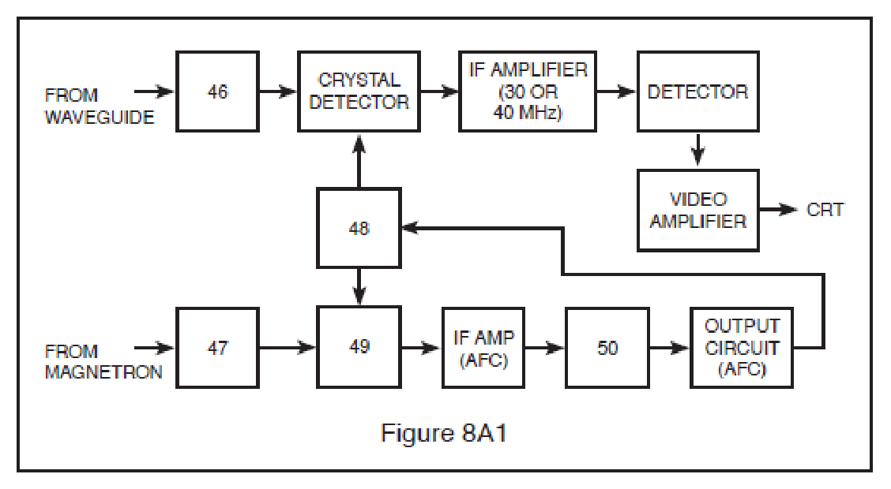
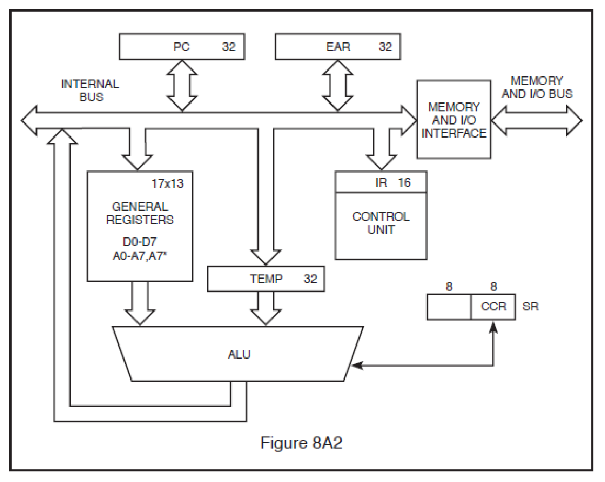
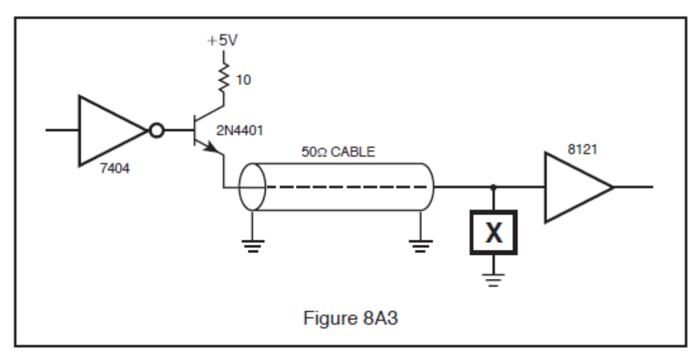
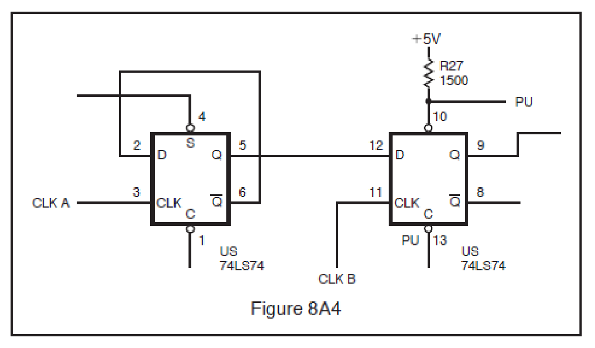
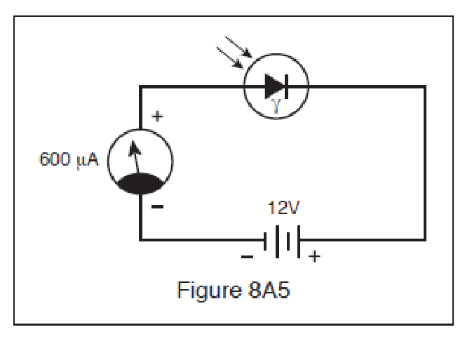
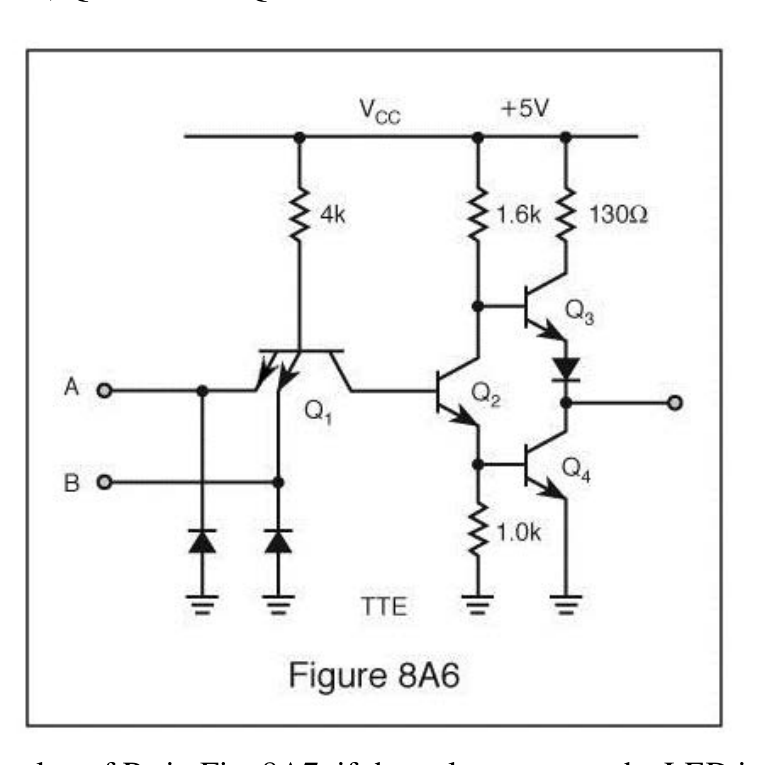
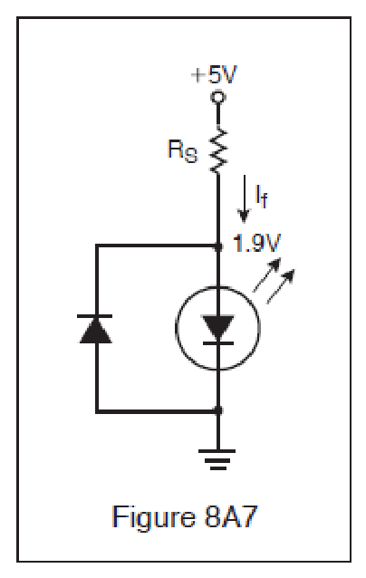
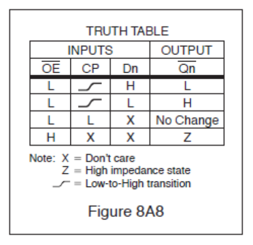

All 60 FCC GROL questions for 8A RADAR Principles with the correct answers marked, from the official current FCC question pool. Test yourself with the free practice exam.
8-1A1
Choose the most correct statement containing the parameters which control the size of the target echo.
A. Transmitted power, antenna effective area, transmit and receive losses, RADAR cross section of the target, range to target. ✓
B. Height of antenna, power radiated, size of target, receiver gain, pulse width.
C. Power radiated, antenna gain, size of target, shape of target, pulse width, receiver gain.
D. Magnetron gain, antenna gain, size of target, range to target, wave-guide loss.
8-1A2
Which of the following has NO effect on the maximum range capability?
A. Carrier frequency.
B. Recovery time. ✓
C. Pulse repetition frequency.
D. Receiver sensitivity.
8-1A3
What type of transmitter power is measured over a period of time?
A. Average. ✓
B. Peak.
C. Reciprocal.
D. Return.
8-1A4
What RADAR component controls timing throughout the system?
A. Power supply.
B. Indicator.
C. Synchronizer. ✓
D. Receiver.
8-1A5
Which of the following components allows the use of a single antenna for both transmitting and receiving?
A. Mixer.
B. Duplexer. ✓
C. Synchronizer.
D. Modulator.
8-1A6
The sweep frequency of a RADAR indicator is determined by what parameter?
A. Carrier frequency.
B. Pulse width.
C. Duty cycle.
D. Pulse repetition frequency. ✓
8-2A1
A radio wave will travel a distance of three nautical miles in:
A. 6.17 microseconds.
B. 37.0 microseconds.
C. 22.76 microseconds.
D. 18.51 microseconds. ✓
8-2A2
One RADAR mile is how many microseconds?
A. 6.2
B. 528.0
C. 12.34 ✓
D. 0.186
8-2A3
RADAR range is measured by the constant:
A. 150 meters per microsecond. ✓
B. 150 yards per microsecond.
C. 300 yards per microsecond.
D. 18.6 miles per microsecond.
8-2A4
If a target is 5 miles away, how long does it take for the RADAR echo to be received back at the antenna?
A. 51.4 microseconds.
B. 123 microseconds.
C. 30.75 microseconds.
D. 61.7 microseconds. ✓
8-2A5
How long would it take for a RADAR pulse to travel to a target 10 nautical miles away and return to the RADAR receiver?
A. 12.34 microseconds.
B. 1.234 microseconds.
C. 123.4 microseconds. ✓
D. 10 microseconds.
8-2A6
What is the distance in nautical miles to a target if it takes 308.5 microseconds for the RADAR pulse to travel from the RADAR antenna to the target and back.
A. 12.5 nautical miles.
B. 25 nautical miles. ✓
C. 50 nautical miles.
D. 2.5 nautical miles.
8-3A1
Frequencies generally used for marine RADAR are in the ___ part of the radio spectrum.
A. UHF
B. EHF
C. SHF ✓
D. VHF
8-3A2
Practical RADAR operation requires the use of microwave frequencies so that:
A. Stronger target echoes will be produced. ✓
B. Ground clutter interference will be minimized.
C. Interference to other communication systems will be eliminated.
D. Non-directional antennas can be used for both transmitting and receiving.
8-3A3
An S-band RADAR operates in which frequency band?
A. 1 - 2 GHz.
B. 4 - 8 GHz.
C. 8 - 12 GHz.
D. 2 - 4 GHz. ✓
8-3A4
A RADAR operating at a frequency of 3 GHz has a wavelength of approximately:
A. 1 centimeter.
B. 10 centimeters. ✓
C. 3 centimeters.
D. 30 centimeters.
8-3A5
The major advantage of an S-band RADAR over an X-band RADAR is:
A. It is less affected by weather conditions. ✓
B. It has greater bearing resolution.
C. It is mechanically less complex.
D. It has greater power output.
8-3A6
An X band RADAR operates in which frequency band?
A. 1 - 2 GHz.
B. 2 - 4 GHz.
C. 4 - 8 GHz.
D. 8 - 12 GHz. ✓
8-4A1
A pulse RADAR has a pulse repetition frequency (PRF) of 400 Hz, a pulse width of 1 microsecond, and a peak power of 100 kilowatts. The average power of the RADAR transmitter is:
A. 25 watts.
B. 40 watts. ✓
C. 250 watts.
D. 400 watts.
8-4A2
A shipboard RADAR transmitter has a pulse repetition frequency (PRF) of 1,000 Hz, a pulse width of 0.5 microseconds, peak power of 150 KW, and a minimum range of 75 meters. Its duty cycle is:
A. 0.5
B. 0.05
C. 0.005
D. 0.0005 ✓
8-4A3
A pulse RADAR transmits a 0.5 microsecond RF pulse with a peak power of 100 kilowatts every 1600 microseconds. This RADAR has:
A. An average power of 31.25 watts. ✓
B. A PRF of 3,200.
C. A maximum range of 480 kilometers.
D. A duty cycle of 3.125 percent.
8-4A4
If a RADAR transmitter has a pulse repetition frequency (PRF) of 900 Hz, a pulse width of 0.5 microseconds and a peak power of 15 kilowatts, what is its average power output?
A. 15 kilowatts.
B. 13.5 watts.
C. 6.75 watts. ✓
D. 166.67 watts.
8-4A5
What is the average power if the RADAR set has a PRF of 1000 Hz, a pulse width of 1 microsecond, and a peak power rating of 100 kilowatts?
A. 10 watts.
B. 100 watts. ✓
C. 1,000 watts.
D. None of these.
8-4A6
A search RADAR has a pulse width of 1.0 microsecond, a pulse repetition frequency (PRF) of 900 Hz, and an average power of 18 watts. The unit’s peak power is:
A. 200 kilowatts.
B. 180 kilowatts.
C. 20 kilowatts. ✓
D. 2 kilowatts.
8-5A1
For a range of 5 nautical miles, the RADAR pulse repetition frequency should be:
A. 16.2 Hz or more.
B. 16.2 MHz or less.
C. 1.62 kHz or more.
D. 16.2 kHz or less. ✓
8-5A2
For a range of 100 nautical miles, the RADAR pulse repetition frequency should be:
A. 8.1 kHz or less.
B. 810 Hz or less. ✓
C. 8.1 kHz or more.
D. 81 kHz or more.
8-5A3
The minimum range of a RADAR is determined by:
A. The frequency of the RADAR transmitter.
B. The pulse repetition rate.
C. The transmitted pulse width. ✓
D. The pulse repetition frequency.
8-5A4
Short range RADARs would most likely transmit:
A. Narrow pulses at a fast rate. ✓
B. Narrow pulses at a slow rate.
C. Wide pulses at a fast rate.
D. Wide pulses at a slow rate.
8-5A5
For a range of 30 nautical miles, the RADAR pulse repetition frequency should be:
A. 0.27 kHz or less.
B. 2.7 kHz or less. ✓
C. 27 kHz or more.
D. 2.7 Hz or more.
8-5A6
For a range of 10 nautical miles, the RADAR pulse repetition frequency (PRF) should be:
A. Approximately 8.1 kHz or less. ✓
B. 900 Hz.
C. 18.1 kHz or more.
D. 120.3 microseconds.
8-6A1
If the PRF is 2500 Hz, what is the PRI?
A. 40 microseconds.
B. 400 microseconds. ✓
C. 250 microseconds.
D. 800 microseconds.
8-6A2
If the pulse repetition frequency (PRF) is 2000 Hz, what is the pulse repetition interval (PRI)?
A. 0.05 seconds.
B. 0.005 seconds.
C. 0.0005 seconds. ✓
D. 0.00005 seconds.
8-6A3
The pulse repetition rate (PRR) refers to:
A. The reciprocal of the duty cycle.
B. The pulse rate of the local oscillator tube.
C. The pulse rate of the klystron.
D. The pulse rate of the magnetron. ✓
8-6A4
If the RADAR unit has a pulse repetition frequency (PRF) of 2000 Hz and a pulse width of 0.05 microseconds, what is the duty cycle?
A. 0.0001 ✓
B. 0.0005
C. 0.05
D. 0.001
8-6A5
Small targets are best detected by:
A. Short pulses transmitted at a fast rate.
B. Using J band frequencies.
C. Using a long pulse width with high output power. ✓
D. All of these answers are correct.
8-6A6
What is the relationship between pulse repetition rate and pulse width?
A. Higher PRR with wider pulse width.
B. The pulse repetition rate does not change with the pulse width.
C. The pulse width does not change with the pulse repetition rate.
D. Lower PRR with wider pulse width. ✓
8-7A1
What component of a RADAR receiver is represented by block 46 in Fig. 8A1?

A. The ATR box.
B. The TR box. ✓
C. The RF Attenuator.
D. The Crystal Detector.
8-7A2
A basic sample-and-hold circuit contains:
A. An analog switch and an amplifier.
B. An analog switch, a capacitor, and an amplifier.
C. An analog multiplexer and a capacitor.
D. An analog switch, a capacitor, amplifiers and input and output buffers. ✓
8-7A3
When comparing a TTL and a CMOS NAND gate:
A. Both have active pull-up characteristics. ✓
B. Both have three output states.
C. Both have comparable input power sourcing.
D. Both employ Schmitt diodes for increased speed capabilities.
8-7A4
Silicon crystals:
A. Are very sensitive to static electric charges.
B. Should be wrapped in lead foil for storage.
C. Tolerate very low currents.
D. All of these. ✓
8-7A5
Which is typical current for a silicon crystal used in a RADAR mixer or detector circuit?
A. 3 mA ✓
B. 15 mA
C. 50 mA
D. 100 mA
8-7A6
What component of a RADAR receiver is represented by block 47 in Fig. 8A1?
A. The ATR box.
B. The TR box.
C. The RF Attenuator. ✓
D. The Crystal Detector.
8-8A1
The basic frequency determining element in a Gunn oscillator is:
A. The power supply voltage.
B. The type of semiconductor used.
C. The resonant cavity. ✓
D. The loading of the oscillator by the mixer.
8-8A2
Which of the following is not a method of analog-to-digital conversion?
A. Delta-sigma conversion.
B. Dynamic-range conversion. ✓
C. Switched-capacitor conversion.
D. Dual-slope integration.
8-8A3
When comparing TTL and CMOS logic families, which of the following is true:
A. CMOS logic requires a supply voltage of 5 volts 20%, whereas TTL logic requires 5 volts 5%.
B. Unused inputs should be tied high or low as necessary especially in the CMOS family.
C. At higher operating frequencies, CMOS circuits consume almost as much power as TTL circuits. ✓
D. When a CMOS input is held low, it sources current into whatever it drives.
8-8A4
The primary operating frequency of a reflex klystron is controlled by the:
A. Dimensions of the resonant cavity. ✓
B. Level of voltage on the control grid.
C. Voltage applied to the cavity grids.
D. Voltage applied to the repeller plate.
8-8A5
A Gunn diode oscillator takes advantage of what effect?
A. Negative resistance.
B. Avalanche transit time.
C. Bulk-effect.
D. Negative resistance and bulk-effect. ✓
8-8A6
Fine adjustments of a reflex klystron are accomplished by:
A. Adjusting the flexible wall of the cavity.
B. Varying the repeller voltage. ✓
C. Adjusting the AFC control system.
D. Varying the cavity grid potential.
8-9A1
Blocking oscillators operate on the formula of:
A. T = R x C. ✓
B. I = E/R.
C. By using the receiver’s AGC.
D. None of the above are correct.
8-9A2
The block diagram of a typical RADAR system microprocessor is shown in Fig. 8A2. Choose the most correct statement regarding this system.

A. The ALU is used for address decoding.
B. The Memory and I/O communicate with peripherals. ✓
C. The control unit executes arithmetic manipulations.
D. The internal bus is used simultaneously by all units.
8-9A3
The phantastron circuit is capable of:
A. Stabilizing the magnetron.
B. Preventing saturation of the RADAR receiver.
C. Being used to control repeller voltage in the AFC system.
D. Developing a linear ramp voltage when triggered by an external source. ✓
8-9A4
The block diagram of a typical RADAR system microprocessor is shown in Fig. 8A2. Choose the most correct statement regarding this system.
A. The ALU executes arithmetic manipulations. ✓
B. The ALU is used for address decoding.
C. General registers are used for arithmetic manipulations.
D. Address pointers are contained in the control unit.
8-9A5
In the Line-Driver/Coax/Line-receiver circuit shown in Fig. 8A3, what component is represented by the blank box marked "X"?

A. 25-ohm resistor.
B. 51-ohm resistor. ✓
C. 10-microhm inductor.
D. 20-microhm inductor.
8-9A6
Choose the most correct statement:
A. The magnetron anode is a low voltage circuit.
B. The anode of the magnetron carries high voltage.
C. The filament of the magnetron carries dangerous voltages. ✓
D. The magnetron filament is a low voltage circuit.
8-10A1
In the circuit shown in Fig. 8A4, U5 pins 1 and 4 are high and both are in the reset state. Assume one clock cycle occurs of Clk A followed by one cycle of Clk B. What are the output states of the two D-type flip flops?

A. Pin 5 low, Pin 9 low.
B. Pin 5 high, Pin 9 low.
C. Pin 5 low, Pin 9 high.
D. Pin 5 high, Pin 9 high. ✓
8-10A2
If more light strikes the photodiode in Fig. 8A5, there will be:

A. Less diode current.
B. No change in diode current.
C. More diode current. ✓
D. There is wrong polarity on the diode.
8-10A3
In the circuit shown in Fig. 8A6, which of the following is true?

A. With A and B high, Q1 is saturated and Q2 is off.
B. With either A or B low, Q1 is saturated and Q2 is off. ✓
C. With A and B low, Q2 is on and Q4 is off.
D. With either A or B low, Q1 is off and Q2 is on.
8-10A4
What is the correct value of RS in Fig. 8A7, if the voltage across the LED is 1.9 Volts with 5 Volts applied and If max equals 40 milliamps?

A. 4,700 ohms.
B. 155 ohms.
C. 77 ohms. ✓
D. 10,000 ohms.
8-10A5
The block diagram of a typical RADAR system microprocessor is shown in Fig. 8A2. Choose the most correct statement regarding this system.
A. The ALU is used for address decoding.
B. General registers are used for arithmetic manipulations.
C. The control unit executes arithmetic manipulations.
D. Address pointers are contained in the general registers. ✓
8-10A6
You are troubleshooting a component on a printed circuit board in a RADAR system while referencing the Truth Table in Fig. 8A8. What kind of integrated circuit is the component?

A. D-type Flip-Flop, 3-State, Inverting. ✓
B. Q-type Flip-Flop, Non-Inverting.
C. Q-type Directional Shift Register, Dual.
D. D to Q Convertor, 2-State.